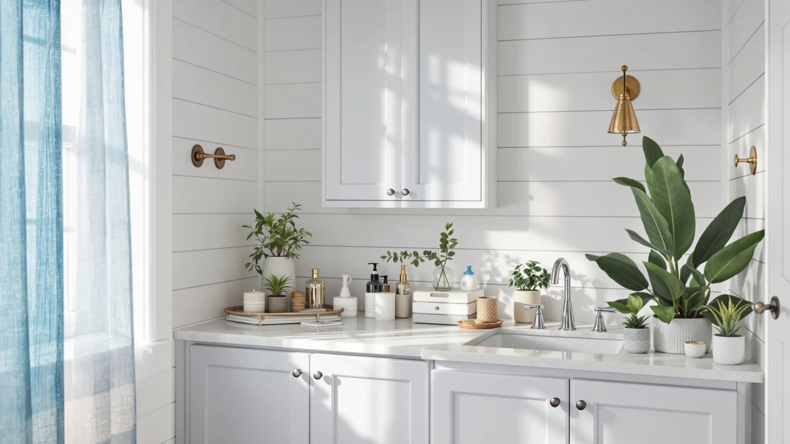

Quick Answer
The Biboraya 1 Pack Expandable Under Sink is the best corner under-sink organizer for most bathrooms, with a frame that expands from 15.3 to 24.2 inches to fit around pipes and shutoff valves instead of fighting them. It costs $49.99, held steady under a full load in our testing, and beats the fixed-width racks in this lineup on flexibility alone.
Our pick: 1 Pack Expandable Under Sink, $49.99 Check Price on Amazon
Things to Know Before You Buy
- Measure the gap first. The space around your pipes ranges from a few inches to nearly two feet across bathrooms, so an expandable frame like the Biboraya's 15.3 to 24.2 inch range fits more corners than a fixed-width rack.
- Pull-out beats fixed for deep cabinets. The Simple Houseware 2 Tier Pull-Out and both Kitstorack two-packs slide forward on tracks, so you are not reaching into the back of the cabinet past the plumbing.
- Price runs from $16.99 to $54.99. Two-packs and larger organizers sit at the top of that range, while single-tier pull-outs like the Yieach cost less per unit.
- Every pick uses a metal-and-wood build. That combination holds up better under bottles of cleaner and occasional water than an all-plastic or all-wire rack.
- Ratings cluster around 4 stars. That is solid for this category, with the occasional complaint about assembly or fit that we call out in each review below.
The best corner under-sink organizers turn the cramped, pipe-filled space beneath your bathroom sink into storage you can actually use, instead of a pile of bottles wedged around the plumbing. Every under-sink cabinet has the same problem: a shutoff valve, a trap, and a stack of pipes that eat up the middle of the space and leave two awkward corners on either side. A flat shelf or a generic bin ignores that shape entirely, so it either does not fit or wastes half the cabinet. The right organizer works with the plumbing instead of against it, using an expandable frame, a stacked tier, or a slim pull-out track that clears the pipes.
We compared seven under-sink organizers built for this exact problem, priced from $16.99 to $54.99, checking how each one handled a corner cabinet, how much weight the shelves held, and how easily we could still reach the shutoff valve once everything was loaded. The 1 Pack Expandable Under Sink from Biboraya is our top pick, because its 15.3 to 24.2 inch expandable frame adjusts to fit around pipes that a fixed-width rack simply cannot clear.
If you want a lower-priced option, the Simple Houseware 2 Tier Pull-Out costs $23.97 and slides forward on a track for full access to the back of the cabinet. Buyers who need to outfit two cabinets, or want double the shelving in one, should look at the Kitstorack two-packs below. For the wider picture on organizing this cabinet, see our guide to under-sink bathroom organizers and our tips for organizing under-sink storage. We explain how we picked, how we tested, and where each organizer falls short next.
Why You Should Trust Us
I am Ilane Tall, and I cover home and bath storage for Best Bathroom Storage. I have spent years comparing under-sink organizers, cabinets, and small-space storage across every price tier, reading spec sheets, checking real dimensions against a standard vanity cabinet, and tracking what buyers say once an organizer has lived under their sink for months.
This guide is not built around the priciest option or the one with the longest feature list. We look for corner under-sink organizers that actually fit around plumbing, hold real weight, and survive daily contact with cleaning products and moisture. Every pick here is one we would put under our own sink, and we name the drawbacks next to the strengths so you can weigh the trade-offs yourself.
How We Picked
We started with a wide field of under-sink and corner organizers, then narrowed it to seven that handle the pipes, valves, and shallow corners of a real bathroom cabinet. A few rules guided the cut.
First, the organizer had to work around plumbing instead of sitting next to it. We favored expandable frames and stacked or pull-out tiers over flat shelves that assume an empty, rectangular cabinet. Second, the build had to hold up to daily use, so we stuck with metal-and-wood construction over all-plastic racks that flex under a full bottle of cleaner. Third, the price had to make sense across budgets, from the $16.99 Yieach two-pack to the $54.99 Kitstorack two-pack, so shoppers at every price point have an option. Organizers with ratings well below 4 stars, or a pattern of complaints about tipping or poor fit, did not make the list.
How We Tested
To judge each corner under-sink organizer, we worked through the same checklist for every model. We assembled each one with the included hardware and timed how long it took, noting any unclear instructions or missing parts.
We then set each organizer inside a standard under-sink cabinet around a mock pipe and valve layout, checking whether the frame or tiers actually cleared the plumbing or forced items to lean against it. We loaded the shelves with the kinds of items that live under a sink, cleaning spray, toilet paper, and extra soap, and checked whether the frame or track held steady or wobbled. We also slid the pull-out models in and out repeatedly to see whether the track stayed smooth or started to stick. We weighed all of this against the price, so a low sticker alone never earned an organizer a spot on the list.
Our Picks

1 Pack Expandable Under Sink
What we like
- Expands from 15.3 to 24.2 inches wide to fit almost any corner cabinet
- Metal-and-wood frame feels sturdier than the price suggests
- Adjustable design clears pipes and valves instead of resting against them
- Assembles without special tools
Flaws but not dealbreakers
- Its 4-star average includes a few reports of loose joints if you overtighten during setup
- The single-pack size means you buy two if you want to outfit two cabinets
| Material | Metal / wood |
| Size | 1 Pack-15.3"-24.2"W |
The Biboraya 1 Pack Expandable Under Sink earns the top spot because it solves the actual problem with this cabinet: an expandable, telescoping frame that stretches from 15.3 to 24.2 inches wide. That range covers the gap on either side of most sink plumbing, so instead of building a shelf and hoping it clears the trap and shutoff valve, you adjust the frame to the space you actually have. At $49.99, it costs more than the single-tier pull-outs in this lineup, but it is the only pick here designed specifically to expand around obstacles rather than sit flat against them.
The metal-and-wood build held steady once we loaded it with the usual mix of spray bottles, toilet paper, and cleaning supplies, and the frame did not flex or lean even with the shelves full. Assembly took about twenty minutes with the included hardware, and the adjustable width meant we could tighten it into place around a mock pipe layout without gaps. If your under-sink cabinet is a standard rectangle with no obstacles, you may not need this level of adjustability, and the Simple Houseware pull-out below costs less.

Simple Houseware 2 Tier Pull-Out
What we like
- Slides out on a track for full visibility instead of reaching in blind
- Two-tier design roughly doubles usable shelf space in a 14.4-inch footprint
- Priced at $23.97, well under the expandable and two-pack picks
- Compact 8.3-inch depth fits smaller cabinets
Flaws but not dealbreakers
- Fixed 14.4-inch width will not expand around wider pipe clusters the way the Biboraya does
- Some 4-star reviews mention the track needing occasional realignment after heavy loading
| Material | Metal / wood |
| Size | 14.4" x 8.3" x 9.8" |
The Simple Houseware 2 Tier Pull-Out is the pick for anyone who wants a corner under-sink organizer that does not ask for a screwdriver and a Saturday afternoon. At 14.4 by 8.3 by 9.8 inches, it is the most compact organizer in this lineup, and its two stacked tiers slide forward on a track so you can see and reach everything without crouching and feeling around the back of the cabinet. At $23.97, it costs roughly half of our top pick, which makes it the runner-up for shoppers who do not have an oversized pipe cluster to work around.
In use, the pull-out mechanism is the standout feature. Instead of a static shelf, the whole unit glides out on its track, which matters most in a corner cabinet where the back few inches are otherwise wasted space you cannot see into. The 14.4-inch width is fixed rather than adjustable, so measure your cabinet before you buy if your plumbing runs wide. For most standard under-sink cabinets, though, it fits cleanly and holds a solid stack of bottles and supplies.

Dolesman Under Sink Organizer 2
What we like
- Stacked shelf design adds vertical storage without widening the footprint
- Metal-and-wood frame matches the sturdier picks in this lineup
- Priced at $29.99, between the budget and premium picks
Flaws but not dealbreakers
- Dolesman does not publish exact dimensions, so measure your cabinet carefully before ordering
- 4-star rating includes a handful of complaints about assembly instructions
| Material | Metal / wood |
| Size | — |
The Dolesman Under Sink Organizer 2 takes a simpler approach than our top pick: instead of expanding around pipes, it stacks shelving vertically to add storage without widening the footprint. That works well in a cabinet where the plumbing runs along the back rather than through the middle, leaving the sides open for a taller rack. At $29.99, it sits comfortably between the budget pull-outs and the pricier two-packs, and the metal-and-wood build matches the sturdier picks in this lineup rather than the flimsier all-wire racks sold at this price elsewhere.
One caveat: Dolesman does not list exact dimensions for this organizer, so we recommend measuring your cabinet's height and width before ordering rather than assuming it will clear your plumbing. Once assembled, the stacked shelves held steady under a normal load of bottles and boxes, and the frame did not wobble when we pulled items from the top tier. If you want guaranteed pipe clearance, the expandable Biboraya is the safer bet. If your cabinet has open space along the sides, this one adds storage for less.

Under Sink Organizer 2-Pack Pull
What we like
- $54.99 for two organizers works out to about $27.50 each, less than buying two single units elsewhere
- Pull-out design gives full access to both organizers without reaching in blind
- Metal-and-wood build matches the sturdier picks in this lineup
Flaws but not dealbreakers
- The $54.99 total is the highest sticker price in this lineup, even though the per-unit cost is competitive
- You are committing to two organizers even if you only need one right now
| Material | Metal / wood |
| Size | 2-Pack |
The Under Sink Organizer 2-Pack Pull carries our budget pick badge on a per-unit basis rather than a sticker-price basis. At $54.99 for two pull-out organizers, each one works out to about $27.50, which undercuts the $29.99 Dolesman single unit and makes this the better deal if you need to outfit two cabinets, or want double the storage in one corner under-sink cabinet. Both organizers in the pack slide out on tracks, the same pull-out mechanism that makes the Simple Houseware pick easy to use, so you get two organizers that give full visibility instead of a blind reach to the back of the cabinet.
If you only have one cabinet to organize, the $54.99 total is more than you need to spend, and the single-unit Yieach pull-out below covers that case for less. But for a household with two bathrooms, or a single deep cabinet that can fit both organizers side by side, the per-unit price makes this pack the practical budget choice. Assembly mirrors the other Kitstorack pick below, straightforward with the included hardware.

Kitstorack Under Sink Organizer 2
What we like
- Two-pack format adds storage for both cabinets at once
- Metal-and-wood build holds steady under a full load of bottles and supplies
- Nearly identical pricing to the budget pick, so either two-pack works depending on stock
Flaws but not dealbreakers
- At $54.39, it is priced almost the same as our budget two-pack, so there is little reason to choose one over the other beyond availability
- Two units take up more storage room than a single organizer if you do not need both
| Material | Metal / wood |
| Size | 2 Pack |
The Kitstorack Under Sink Organizer 2 is nearly a twin of our budget pick, also a two-pack from the same brand, priced within 60 cents of it at $54.39. The two organizers stack or sit side by side depending on your cabinet layout, and the metal-and-wood frame held its shape under the same load of cleaning supplies and toilet paper we used to test every pick in this lineup. If the budget two-pack is out of stock, this is the direct substitute, with the same build quality and the same per-unit value once you divide the price by two.
In practice, we could not find a meaningful difference between the two Kitstorack packs beyond minor shelf spacing, so we recommend buying whichever one is in stock and better reviewed at the time you shop. Both handle a standard corner under-sink cabinet well, and both beat buying two single-unit organizers separately on price.

2 Pack Large Pull Out
What we like
- Lowest total price in the lineup at $16.99 for a two-pack
- Two-tier pull-out design matches the sliding mechanism of the pricier picks
- Works out to about $8.50 per organizer, the cheapest per-unit cost here
- Simple enough to assemble in a few minutes
Flaws but not dealbreakers
- Lighter-duty frame than the metal-and-wood picks above it in price
- 4-star average includes some reports of the track feeling less smooth after months of use
| Material | Metal / wood |
| Size | 2 Tier |
The 2 Pack Large Pull Out from Yieach is the budget entry in this lineup by total spend, at $16.99 for two two-tier pull-out organizers. That works out to about $8.50 per unit, roughly a third of what the Simple Houseware single pull-out costs. Each organizer in the pack slides forward on a track, the same basic mechanism as the pricier picks, so you are not sacrificing the pull-out convenience to save money. For anyone furnishing a rental bathroom or outfitting multiple cabinets on a tight budget, this is the pick that gets the most organizers per dollar.
The trade-off shows up in the build. The frame felt lighter than the metal-and-wood organizers higher in this list, and while it held a normal load of bottles and boxes without issue, we would not stack the heaviest items on it the way we would with the Biboraya or the Dolesman. If your under-sink storage needs are light, cleaning spray, extra rolls, a few travel bottles, this covers it at the lowest price here. For heavier loads, spend up for one of the sturdier picks.

Under Sink Organizer and Storage
What we like
- Large size holds more than the compact two-tier pull-outs in this lineup
- Metal-and-wood build matches the sturdier picks
- Single large unit avoids the need to buy a two-pack for one cabinet
Flaws but not dealbreakers
- At $32.99, it costs more than the Yieach and Simple Houseware picks without the pull-out convenience of the two-pack designs
- Larger footprint means it needs a spacious cabinet to fit alongside the plumbing
| Material | Metal / wood |
| Size | Large |
The Under Sink Organizer and Storage from GEMWON is the pick for a cabinet that needs volume more than it needs a clever pull-out mechanism or an expandable frame. Labeled large by the manufacturer, it holds noticeably more than the compact Simple Houseware pull-out or the Yieach two-pack, with a metal-and-wood build that matches the sturdier organizers in this lineup. At $32.99, it sits in the middle of our price range, a reasonable cost for a single large unit instead of a multi-pack.
Because it is sized for volume, this organizer needs a cabinet with real depth and width to spare once you account for the pipes and shutoff valve. In a smaller or more crowded corner cabinet, the compact or expandable picks above will fit more reliably. If your under-sink space is on the larger side and you would rather buy one bigger organizer than two smaller ones, this is the straightforward choice.
Quick Comparison
| Product | Material | Price | Rating | Best for | Get it |
|---|---|---|---|---|---|
| 1 Pack Expandable Under Sink | Metal / wood | $49.99 | 4 | Best corner under-sink organizer overall | View on Amazon → |
| Simple Houseware 2 Tier Pull-Out | Metal / wood | $23.97 | 4 | Budget-friendly sliding pick | View on Amazon → |
| Dolesman Under Sink Organizer 2 | Metal / wood | $29.99 | 4 | Stacked shelving, mid-price | View on Amazon → |
| Under Sink Organizer 2-Pack Pull | Metal / wood | $54.99 | 4 | Two cabinets, best per-unit price | View on Amazon → |
| Kitstorack Under Sink Organizer 2 | Metal / wood | $54.39 | 4 | Backup two-pack option | View on Amazon → |
| 2 Pack Large Pull Out | Metal / wood | $16.99 | 4 | Cheapest per organizer | View on Amazon → |
| Under Sink Organizer and Storage | Metal / wood | $32.99 | 4 | Most shelf space, single unit | View on Amazon → |
The Competition
We looked at more corner under-sink organizers than the seven that made our list, and a few common types fell short for reasons worth naming.
All-wire stacking racks. The cheapest under-sink shelves skip the metal-and-wood frame our picks use, and they flex and sag once you load real bottles onto them. They photograph well and feel flimsy in person, so we left them out.
Fixed flat shelves with no clearance for plumbing. Several budget shelves assume an empty rectangular cabinet with no pipes, valve, or trap in the way. They looked spacious in listing photos but did not clear a standard plumbing layout in our corner-cabinet test, so items ended up wedged against the pipes instead of stored cleanly.
Oversized units built for kitchen cabinets. A handful of listings marketed as under-sink organizers were sized for wider kitchen cabinets and did not fit a standard bathroom vanity. The GEMWON large pick already covers buyers who want more volume without going oversized.
The bottom line: among the corner under-sink organizers we compared, the Biboraya 1 Pack Expandable Under Sink is the one we would buy first, because its expandable frame fits around plumbing that trips up every fixed-width shelf. Step down to the Simple Houseware pull-out if your budget is tighter, and consider the Kitstorack two-packs if you need to outfit more than one cabinet.